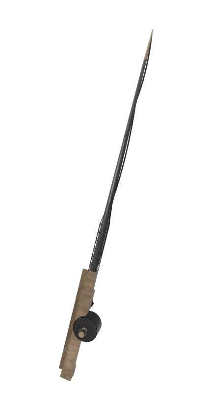

Отправляйся в Moosewood
Найди магазин Marc в стартовой деревне.
Инструкции по локациям, предметам и удочкам в Fisch

Найди магазин Marc в стартовой деревне.
Carbon Rod стоит 2 000 C$.
Она находится в магазине Marc рядом с другими стартовыми удочками.
Источники: Carbon Rod.